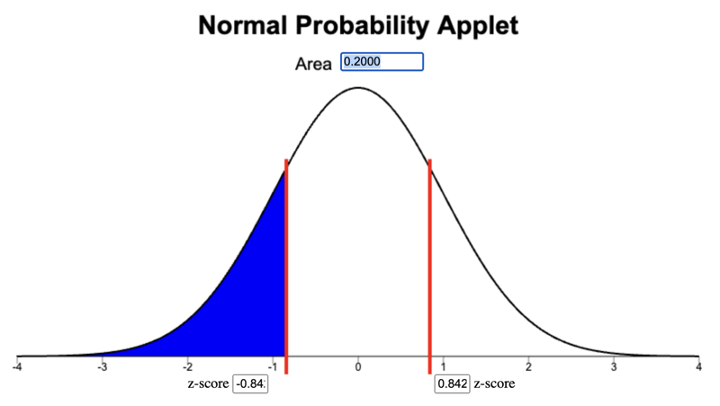

Question List
This list of problems focus on computations and concepts that students have a tendency of mixing up or need additional practice. These problems are intended the to be used as interleaved retrievel practice at the beginning of class to keep the concepts fresh in students minds throughout the semester.
As the problems are selected the box can be checked and a note can indicate which week/day it was used. It is probably okay to use problems more than once as long as there is some time between uses.
After Lesson 1
Probability Rules
Problem: Probability Rules Error Identification
What’s wrong with the statement, “There is a 1.2 probability of snow in January in Rexburg”?
Possible Solution
A probability is a number between 0 and 1, \(0 \leq p \leq 1\). The probability of snow cannot be 1.2 because \(1.2 \nleq 1\) (rather 1.2 > 1).
Problem: Snow in May
Suppose the probability of snow in Rexburg in May is 0.79. What is the probability that there will be no snow in Rexburg in May?
Possible Solution
1-0.79 = 0.21
The probability that there will be no snow in Rexburg in May is 0.21.
Problem: Tokens
A box of tokens contains 8 blue tokens, 6 red tokens, and 4 yellow tokens.
If a token is selected at random from the box, what is the probability that the token is blue?
Possible Solution
P( token is blue ) = \(\frac{8}{8+6+4} = \frac{8}{18} = \frac{4}{9} = 0.\overline{4}\)
If a token is selected at random from the box, what is the probability that the token is not red?
Possible Solution
P( token is red ) = \(\frac{6}{18} = 0.\overline{3}\)
P( token is NOT red ) = \(1 - 0.\overline{3} = 0.\overline{6}\)
Problem: Blood Type
The probability that a randomly chosen North American has a particular ABO blood type and Rh factor is given below.
Source: “The Analysis of Biological Data” by Whitlock and Schluter, 3rd Edition, page 125.
Blood Type Probability O+ 0.374 O- 0.066 A+ 0.357 A- 0.063 B+ 0.085 B- 0.015 AB+ 0.034 AB- 0.006 What is the probability that a randomly selected North American, will have blood type A?
Possible Solution
P( has type A+ ) + P( has type A- ) = 0.357 + 0.063 = 0.42
The probability that randomly selected North American will have type A blood is 0.42.
What is the probability that a randomly selected North American, will ’‘’not’’’ have O+ blood type?
Possible Solution
1 - P( has type 0+) = 1 - 0.374 = 0.626
The probability that a randomly selected North American will not have O+ blood is 0.626.
Problem: 3 Coin Flips
If you flip a fair coin 3 times you could get either 0, 1, 2, or 3 heads with the following probabilities.
0 Heads 1 Head 2 Heads 3 Heads \(\frac{1}{8}\) ?? \(\frac{3}{8}\) \(\frac{1}{8}\) What is the probability that you will get 1 head in the three tosses?
Possible Solution
P( 1 head ) = 1 - P( not 1 head) = 1 - (1/8 + 3/8 + 1/8) = 1 - 5/8 = 3/8
What is the probability you will not get (exactly) 2 heads in the three tosses?
Possible Solution
1 - P( 2 heads ) = 1 - 3/8 = 5/8
After Lessons 3 and 4
It might help students make the distinction between percentiles from a distribution verses sample percentiles if several problem sets include percentile
Percentile with Distribution
Problem: Pregnancy 80th Percentile
The length of human pregnancies from conception to birth is normally distributed with mean 266 days and a standard deviation of 16 days. Find the 80th percentile.
Possible Solution
\(\mu =266\)
\(\sigma = 16\)
Normal Probability Applet Information
To find the z-score corresponding to the 80th percentile.
Select all the area to the left.
Type 0.8 in the Area box.
Read the z-score from the right box.

With 80% of the area to the left, the z-score is 0.842.
\(z = 0.842\)
\(\begin{aligned} x &= \mu + z\sigma \\ &= 266 + 0.842(16) \\ &= 279.472 \end{aligned}\)
The 80th percentile is 279.5 days (\(x = 279.5\)).
Problem: Pregnancy 90th Percentile
The length of human pregnancies from conception to birth is normally distributed with mean 266 days and a standard deviation of 16 days. Find the 90th percentile.
Possible Solution
\(\mu = 266\)
\(\sigma = 16\)
Normal Probability Applet Information
To find the z-score corresponding to the 90th percentile.
- Select all the area to the left.
- Type 0.9 in the Area box.
- Read the z-score from the right box.

With 90% of the area to the left, the z-score is 1.282.
\(z = 1.282\)
\(\begin{align*} x &= \mu + z\sigma \\ &= 266 + 1.282(16) \\ &= 286.512\end{align*}\)
The 90th percentile is 286.5 days (\(x = 286.5\)).
=NORM.INV(.9,266,16)Problem: Pregnancy 20th Percentile
The length of human pregnancies from conception to birth is normally distributed with mean 266 days and a standard deviation of 16 days. Find the 20th percentile.
Possible Solution
\(\mu = 266\)
\(\sigma = 16\)
Normal Probability Applet Information
To find the z-score corresponding to the 20th percentile.
- Select all the area to the left.
- Type 0.2 in the Area box.
- Read the z-score from the left box.

With 20% of the area to the left, the z-score is -0.842.
=NORM.S.INV(0.2)\(z = -0.842\)
\(\begin{align*} x &= \mu + z\sigma \\ &= 266 + (-0.842)16 \\ &= 252.528\end{align*}\)
The 20th percentile is 252.5 days (\(x = 252.5\)).
Problem: Pregnancy 25th Percentile
The length of human pregnancies from conception to birth is normally distributed with mean 266 days and a standard deviation of 16 days. Find the 25th percentile.
Possible Solution
\(\mu = 266\)
\(\sigma = 16\)
Normal Probability Applet Information
To find the z-score corresponding to the 25th percentile.
- Select all the area to the left.
- Type 0.25 in the Area box.
- Read the z-score from the left box.
With 25% of the area to the left, the z-score is -0.674.
\(z = -0.674\)
\(\begin{align*} x &= \mu + z\sigma \\ &= 266 + (-0.674)16 \\ &= 255.216\end{align*}\)
The 25th percentile is 255.2 days (\(x = 255.2\)).
The 1st quartile is 255.216 days.
=NORM.INV(0.25,266,16)Problem: Pregnancy 50th Percentile
The length of human pregnancies from conception to birth is normally distributed with mean 266 days and a standard deviation of 16 days. Find the 50th percentile.
Possible Solution
\(\mu = 266\)
\(\sigma = 16\)
Normal Probability Applet Information
To find the z-score corresponding to the 50th percentile.
- Select all the area to the left.
- Type 0.5 in the Area box.
- Read the z-score from either box (right box or left box, they are the same).\
With 50% of the area to the left, the z-score is 0.
=NORM.S.INV(0.5)\(z = 0\)
\(\begin{align*} x &= \mu + z\sigma \\ &= 266 + (0)16 \\ &= 266\end{align*}\)
The 50th percentile is 266 days (\(x = 266\)).
The median is 266 days.
Percentile with Data
Problem: Sugar Sack Weights 80th percentile
Use the data from tinyurl.com/M221-dist-shapes to calculate the 80th percentile of sugar sack weights.
Possible Solution
=PERCENTILE(B:B,0.8)The 80th percentile of sugar sack weights is 10.093.
Problem: Wait Times 40th percentile
Use the data from tinyurl.com/M221-dist-shapes to calculate the 40th percentile of wait times.
Possible Solution
=PERCENTILE(C:C,0.4)The 40th percentile of wait times is 1.8.
Problem: Test Scores 95 percentile
Use the data from tinyurl.com/M221-dist-shapes to calculate the 95th percentile of test scores.
Possible Solution
=PERCENTILE(A:A,0.95)The 95th percentile of test scores is 97.
After Lesson 5
Approximate Rule for Bell Shaped Distributions
Assign Problem 1-3 on the day of Lesson 5. I think the students should have enough information after the reading to help each other reason through these exercises.
Problem: 68-95-99.7 Rule Problem 1
Use the 68-95-99.7 rule to calculate the approximate area from \(z = -1\) to \(z=0\). Remember the normal distribution is symmetric.
What does that tell you about the area from \(z = 0\) to \(z=1\)?
Use the 68-95-99.7 rule to calculate the approximate below \(z=-1\).
What does that tell you about the area above \(z = 1\)?
Problem: 68-95-99.7 Rule Problem 2
Use the 68-95-99.7 rule to calculate the approximate area from \(z = -2\) to \(z=0\).
What does that tell you about the area from \(z = 0\) to \(z=2\)?
Use the 68-95-99.7 rule to calculate the approximate below \(z=-2\).
What does that tell you about the area above \(z = 2\)?
Problem: 68-95-99.7 Rule Problem 3
Use the 68-95-99.7 rule to calculate the approximate area from \(z = -3\) to \(z=0\).
What does that tell you about the area from \(z = 0\) to \(z=3\)?
Use the 68-95-99.7 rule to calculate the approximate below \(z=-3\).
What does that tell you about the area above \(z = 3\)?
Problem: 68-95-99.7 Rule Problem 4
Use the 68-95-99.7 rule to calculate the approximate area less than \(z = -2\). Remember to draw pictures as part of your solution.
Possible Solution
The area within 2 standard deviation of the mean is approximately 0.95.

The remaining area is approximately 1-0.95 = 0.05.
Since the normal distribution is symmetric the area in the left tail (the area less than \(z = -2\)) is half that, 0.05/2 = 0.025.
The area less than \(z = -2\) is approximately 0.025 (or 2.5% of the total area).
Use the 68-95-99.7 rule to calculate the approximate area less than \(z = 1\). Remember to draw pictures as part of your solution.
Possible Solution
The area within 1 standard deviation of the mean is approximately 0.68.

The remaining area is approximately 1-0.68 = 0.32.
Since the distribution is symmetric the area in the left tail (the area less than \(z = -1\)) is half that, 0.32/2 = 0.16.
The area less than \(z = 1\) is the sum of the area to the left of \(z = -1\) and the area between -1 and 1. We compute 0.16 + 0.68 = 0.84.
The area less than \(z = 1\) is approximately 0.84 (or 84% of the total area).
Use the 68-95-99.7 rule to calculate the approximate area between \(z = -2\) and \(z = 1\). Remember to draw pictures as part of your solution.
Possible Solution
The area we want to find is shown below.

If you subtract the area to the left of \(z = -2\) from the area to the left of \(z = 1\) you will be left with the area between \(z = -2\) and \(z = 1\).

The area to the left of \(z = -2\) is 0.025 (Recall the calculation \(\frac{1 - 0.9 5}{2} = 0.025\) from part [a] above).
The area to the left of \(z = 1\) is 0.84 (Recall the calculation \(\frac{1-0.68}{2} + 0.68 = 0.84\) from part [b] above).
Taking away the area to the left of \(z = -2\) from the area to the left of \(z = 1\) we have \(0.84 - 0.025 = 0.815\).
The area area between \(z = -2\) and \(z = 1\) is 0.815 (or 81.5% of the total area).
Can you find a group that calculated these areas different from you? What can you learn from that group?
Problem: 68-95-99.7 Rule Problem 5
Use the 68-95-99.7 rule to calculate the approximate area between \(z = 2\) and \(z = 3\). Remember to draw pictures.
Possible Solution
The area we are interested in is shown below.

The area within 3 standard deviation of the mean is approximately 0.997.

The area within 2 standard deviation of the mean is approximately 0.95.
If we remove (subtract) the area between \(z = -2\) and \(z=2\) from the area between \(z = -3\) and \(z=3\), we will be left with the areas between \(z=-3\) and \(z=-2\) and between \(z=2\) and \(z=3\).

0.997 - 0.95 = 0.047
Because the distribution is symmetric these two remaining areas will be the same size.
0.047/2 = 0.0235
The area between \(z = 2\) and \(z = 3\) is 0.024 (or 2.4% of the total area).
Can you find a group that calculated the area different from you?
Problem: 68-95-99.7 Rule Problem 6
Problem: 68-95-99.7 Rule Problem 7
Problem: 68-95-99.7 Rule Problem 8
Problem: 68-95-99.7 Rule Problem 9
Problem: 68-95-99.7 Rule Problem 10
Probability Calculations with Normal Distribution
Problem: Pregnancy
Problem: LSAT
The Law School Admission Test (LSAT) is required for admission to many law schools. The scores on the LSAT are approximately normal with mean of 150 and standard deviation of 9. Queen’s School of Business in Kingston, Ontario requires a minimum LSAT score of 157 for admission. What is the probability that a randomly selected student will score below 157?
Possible Solution
$= 150 $
$= 9 $
\(x = 157\)
\(z = \frac{x - \mu}{\sigma} = \frac{157 - 150}{9} = 0.\overline{7}\)
Normal Probability Applet Information
To find the probability corresponding to a z-score.
- Shade the area(s) of interest.
- Type the z-score in the box (negative value the left box and positive values the right box).
- Read the probability from the area box.

=NORM.DIST(157,150,9,TRUE)\(P(X < 157) = P(Z < 0.\overline{7}) = 0.7817\)
The probability a randomly selected student will score below 157 is 0.782.